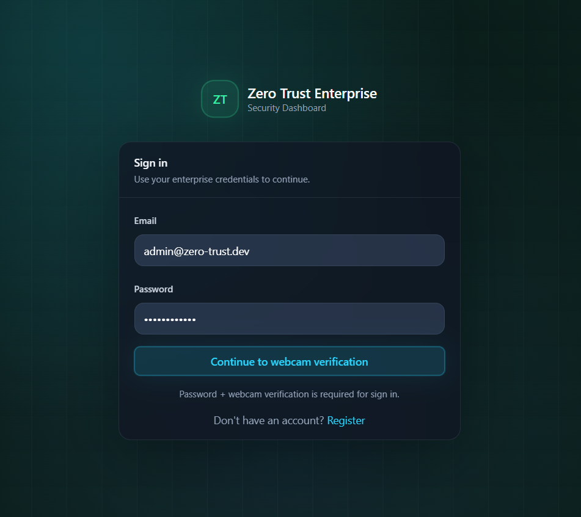
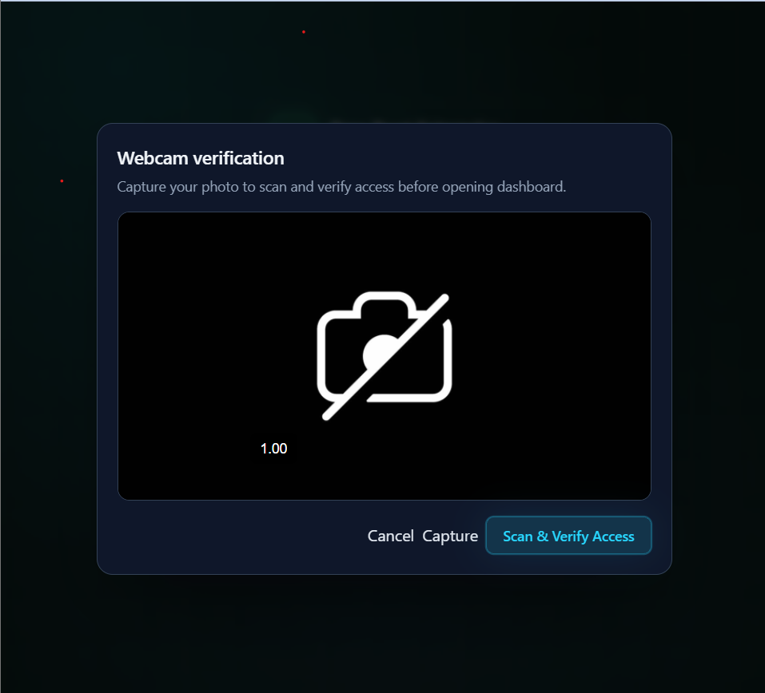
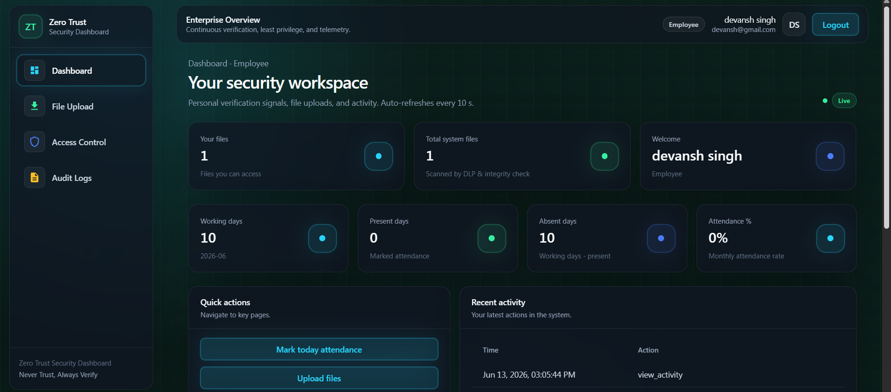
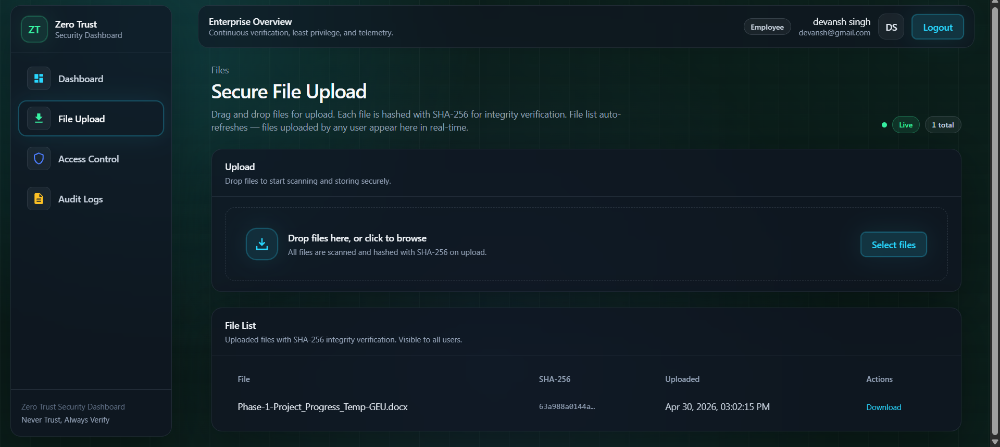
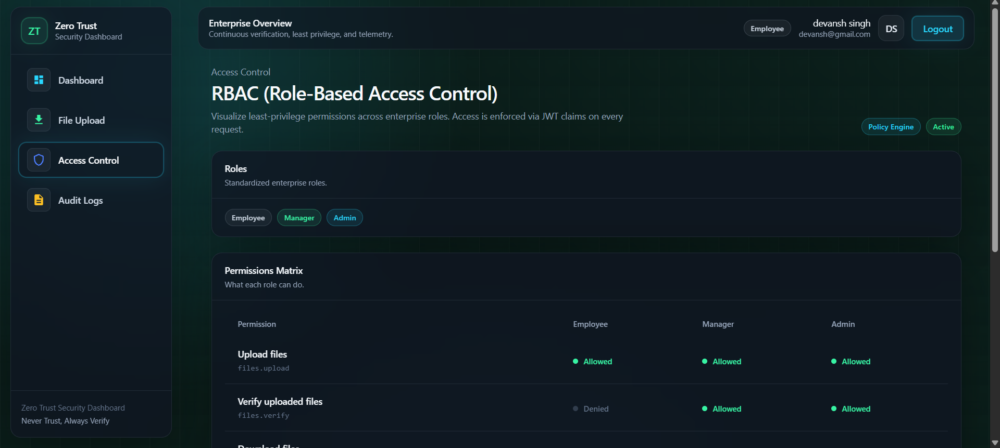
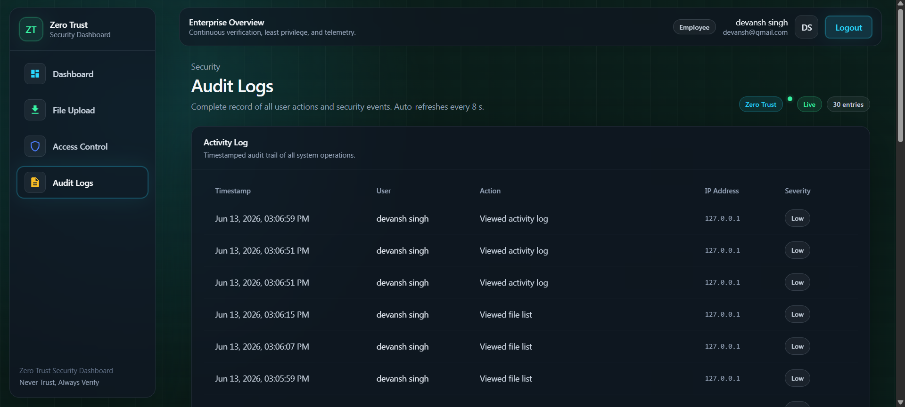

Zero Trust Enterprises Model
Problem Statement
Traditional security models rely on a perimeter-based approach, which assumes that everything inside the network is trustworthy. However, with the rise of remote work, cloud computing, and sophisticated cyber threats, this model has become inadequate. The Zero Trust model addresses these challenges by enforcing strict access controls and continuous verification of users and devices, regardless of their location.
Purpose of the Project
The Zero Trust model is crucial for modern enterprises to protect sensitive data and systems from breaches. Implementing this model can significantly reduce the attack surface and mitigate risks associated with insider threats and compromised credentials. This project aims to demonstrate the implementation of Zero Trust principles in a simulated enterprise environment, showcasing its effectiveness in enhancing security posture.
Approach
- Designed the architecture for the Zero Trust model implementation.
- Developed a simulated enterprise environment to demonstrate Zero Trust principles.
- Implemented strict role based access controls and continuous verification mechanisms.
- Created a user-friendly interface for managing and monitoring security policies.
- Integrated logging and reporting features to track security events.
Working
The project simulates an enterprise network where users and devices must authenticate and be authorized before accessing resources. It includes features such as multi-factor authentication, least privilege access, and continuous monitoring to ensure that only trusted entities can interact with critical systems. The interface allows administrators to define security policies, monitor access attempts, and respond to potential threats in real-time.
Technologies Used
- Frontend: React + Vite
- Backend: Flask + SQLAlchemy
- Database: SQLite (instance/ztesd.db)
- Auth: Email/password + webcam verification (image hash matching)
Key Features
- User registration with webcam enrollment
- Login with webcam verification
- JWT-based protected APIs
- Role-based access (Employee, Manager, Admin)
- Attendance, dashboard, file APIs
Project Screenshots






Challenges Faced
- Designing a secure and scalable architecture for the Zero Trust model.
- Implementing robust authentication and authorization mechanisms.
- Ensuring seamless integration of various security components.
Future Enhancements
- Enhanced Threat Detection
- Improved User Experience
- Expanded Integration Capabilities
- Advanced Reporting Features
- Automated Compliance Management